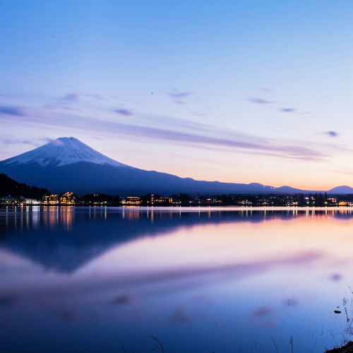

Lake Kawaguchi – Views of Mount Fuji and Scenic Beauty
Lake Kawaguchi (河口湖), located in the Fuji Five Lakes region, is one of the best places to view Mount Fuji. Known for its picturesque beauty, the lake offers stunning reflections of the iconic mountain, especially during sunrise or sunset. It's a great destination for outdoor activities such as boating, hiking, and photography.
A Scenic Getaway by Mount Fuji
Lake Kawaguchi is one of the most popular lakes in the Fuji Five Lakes region. It’s a perfect spot for those who want to capture the beauty of Mount Fuji in all its glory. The area is also home to various resorts, hot springs, and local shops, making it a fantastic retreat for nature lovers.
Outdoor Activities Around the Lake
Visitors to Lake Kawaguchi can enjoy a variety of outdoor activities. You can rent boats or go paddle boating on the lake, or explore the surrounding nature trails. In addition, the lake area is known for its seasonal beauty, with cherry blossoms in spring, vibrant foliage in autumn, and winter landscapes that offer beautiful views of the snow-covered Mount Fuji.
How to Get to Lake Kawaguchi
- 🌸 From Tokyo: Take the JR Chuo Line to Otsuki Station, then transfer to the Fujikyu Railway and ride to Kawaguchiko Station (approximately 2.5 hours).
- 🌸 By car: Drive via the Chuo Expressway to Lake Kawaguchi (approximately 2 hours from central Tokyo).
- 🌸 Opening hours: Open year-round, with the best views of Mount Fuji in the early morning and evening.
- 🌸 Best photo spots: The view of Mount Fuji from the northern shore, the lakeside promenade, and the Chureito Pagoda (for a stunning panoramic view).
Why Visit Lake Kawaguchi
Lake Kawaguchi offers an unparalleled opportunity to witness the majesty of Mount Fuji. Whether you're interested in photography, hiking, or simply relaxing by the lakeside, this location is perfect for nature lovers and those wanting to immerse themselves in the tranquil beauty of Japan.
Tags: Lake Kawaguchi, Mount Fuji views, Fuji Five Lakes, Japan outdoor activities, Kawaguchiko, scenic spots Japan.
Planning to visit Lake Kawaguchi?
To get the most immersive and insightful experience, we recommend booking a certified local private guide from our team. All our guides are licensed professionals officially recognized by the Japanese government, offering personalized tours tailored to your interests. Please contact your selected guide in advance to confirm availability and get expert assistance for your trip.